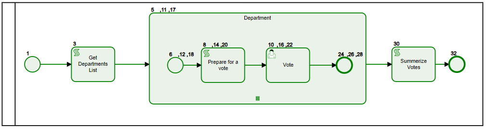

Multi-instance Tasks (loops):#
Any Task can have multi-instance either Sequential or Parrallel
Loops have a unique data structure to support multiple items for same node with each of unique data
We will use an example to illustrate the use of loops:
- We would like to conduct a poll on various departments about new projects coming up
- We will retrieve department list from a DB using Get Department List service task
- For each department will initiate a subProcess department with a multi-instance
Defining loop collection#
- Input Collection is defined as an Array, defines the multipicity of the node.
- Each value in the collection becomes a key to item

- Since we like to have various departments vote at any time, we make the multi-instance
parallel - Inside the subprocess instance will assign users and designate more information about the vote in
Prepare for a vote - A User Task
voteto allow desigated users/user groups to vote with some input fields - After all department complete their vote, another task
Summarize Voteswill process the results

Data structure#
- Each loop instance stores its own unique data elements, for subProcess loops data is shared among all node items inside the subprocess
So the data structure looks like:
Loop name
Key
data
department: {
IT: {
scriptLog: 'added by script event,key:IT',
votedBy: 'IT-User',
vote: 85
},
HR: {
scriptLog: 'added by script event,key:HR',
votedBy: 'HR-User',
vote: 100
},
Billing: {
scriptLog: 'added by script event,key:Billing',
votedBy: 'Billing-User',
vote: 80
}
}
Any node inside the loop will share same data, so inside 'HR'
console.log(item.data.vote,'for ',item.itemKey);
Will produce: 100 for HR.
However, Summarize Votes task is outside the subprocess and at the root, so it has the instance data structure
So once you have access to instance data:
Object.keys(item.data.department).forEach(key=>{
console.log('Vote for:',key,item.data.department[key]['vote']);
});
will produce:
Vote for: IT 100
Vote for: HR 85
Vote for: Billing 80
Data Search#
- During the execution, either through an event or a script/service task
item.token.execution.getItems().filter(itm=>(itm.elementId=='Activity_vote')).forEach(voteItem=>{
let vote =voteItem['data']['vote'];
let dept=voteItem.itemKey;
console.log("vote Item",voteItem.seq,'dept:',dept,'vote',vote);
});
- In a detached fashion, like a batch job or remote access
let items=await api.data.findItems({"items.elementId":'Activity_vote',"data.caseId":1050});
items.forEach(voteItem=>{
let vote =voteItem['data']['vote'];
let dept=voteItem.itemKey;
console.log("vote Item",voteItem.seq,'dept:',dept,'vote',vote);
});
- Search for a particular item by key:
let items=await api.data.findItems({"items.elementId":'Activity_vote',"items.itemKey":"HR"});